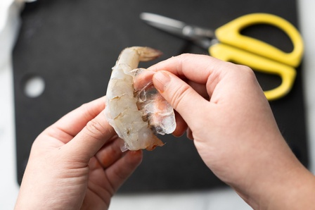
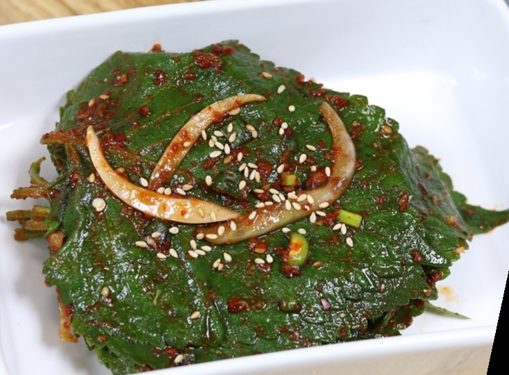
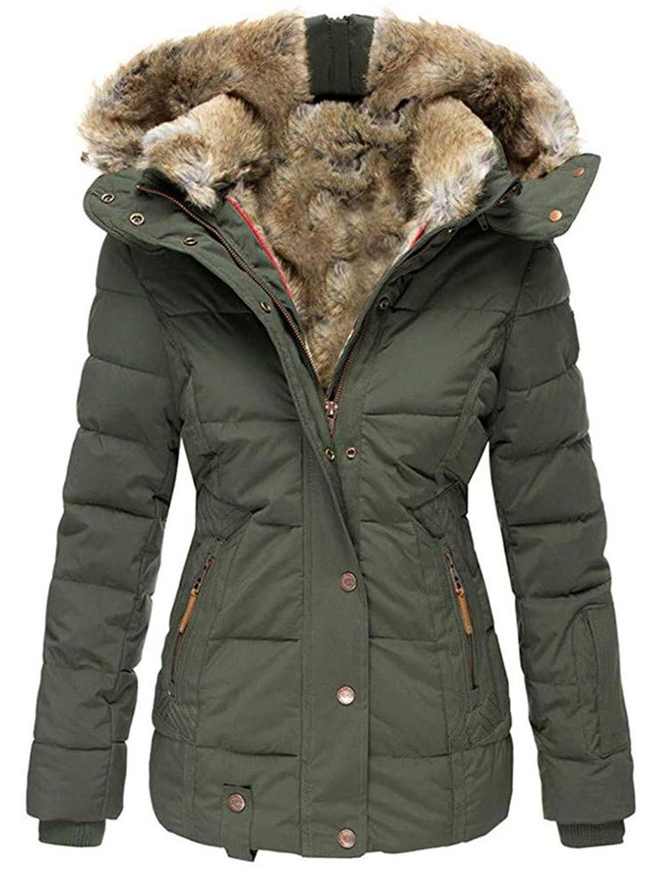
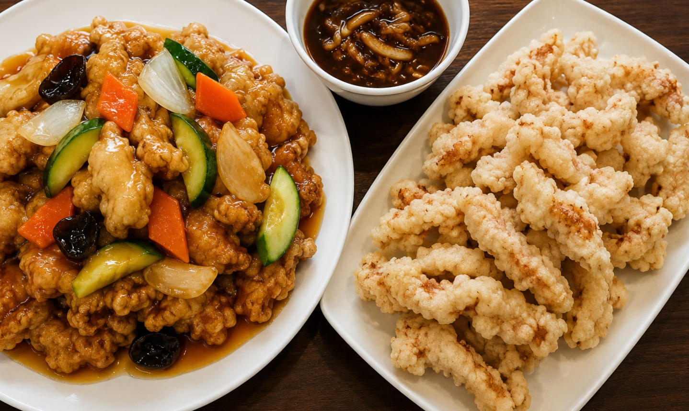
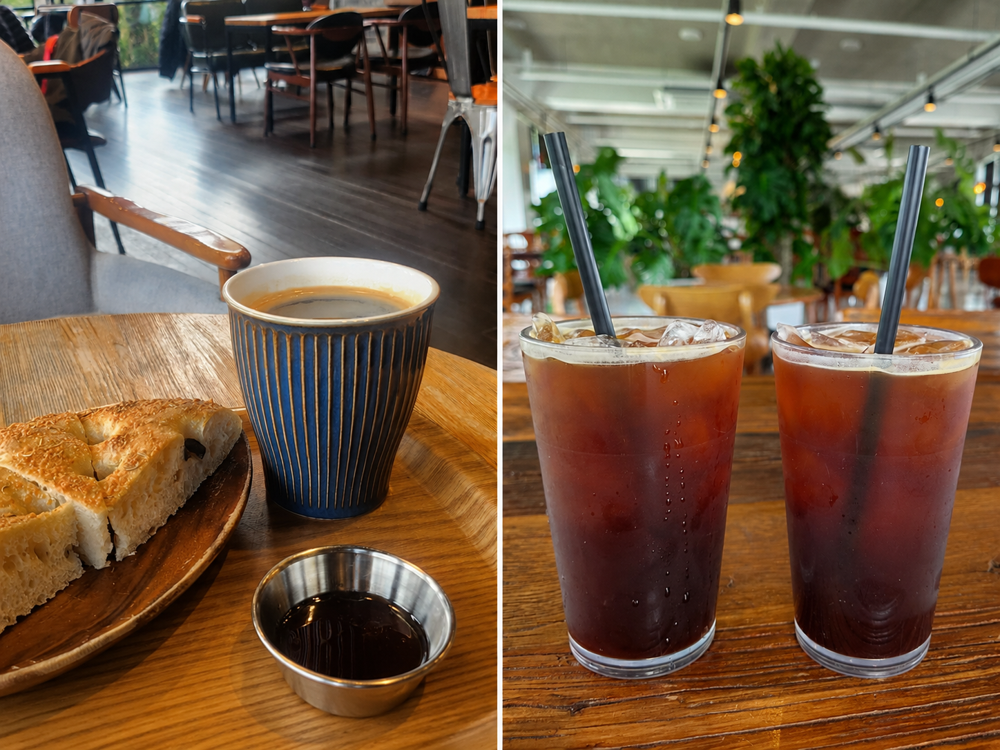

Peeling Shrimp
Your partner peels shrimp for someone of the opposite sex. Is it simple kindness, or does it cross a line?
Choose your side.

The Perilla Leaf
Someone of the opposite sex cannot separate two stuck perilla leaves. Your partner helps them using their own chopsticks. Helpful gesture, or too intimate?
Choose your side.

The Coat Zipper
Your partner notices that someone of the opposite sex has a stuck zipper and reaches over to zip up their coat. Everyday kindness, or too close for comfort?
Choose your side.

Tangsuyuk: Pour or Dip?
Tangsuyuk is a popular Korean-Chinese dish made with crispy fried pork
and served with a sweet and sour sauce.
Some people pour the sauce over the entire dish, making every bite juicy
and flavorful.
Others prefer to dip each piece into the sauce to keep the crispy texture.
Which side are you on?
Choose your side.

Iced or Hot Americano?
Even in freezing winter, many Koreans still order iced coffee. Are you team Eoljukah or team hot coffee?
Choose your side.